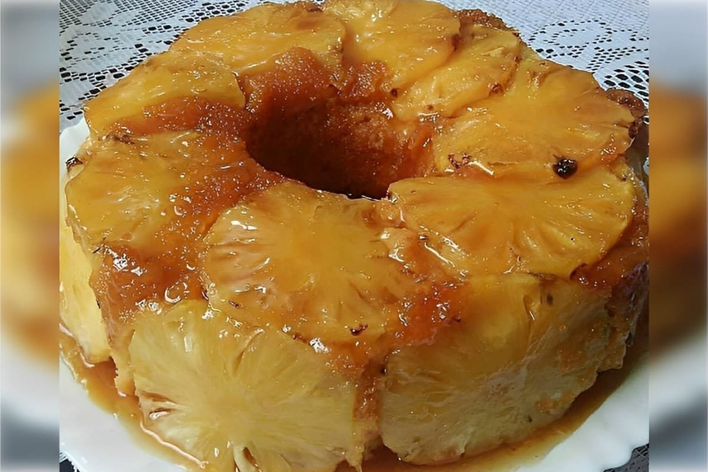

Doces · Tortas e bolos
Bolo de abacaxi

Ingredientes
- 1 colher (sopa) de manteiga
- 1/4 xícara de açúcar demerara
- 5 rodelas de abacaxi em conserva escorridas
- 5 cerejas ao marasquino
- 1 xícara de farinha
- 3/4 xícara de açúcar
- 1 pitada de sal
- 1 ovo
- 2 colheres (sopa) de margarina
- 1/2 xícara da calda do abacaxi
- 1 colher (chá) de baunilha
- 1 colher (chá) de fermento
Modo de preparo
- Pré-aqueça o forno a 180 °C. Derreta manteiga em forma de vidro de 25 cm; polvilhe demerara e arrume abacaxi e cerejas.
- Bata os demais ingredientes no liquidificador; espalhe sobre a fruta e asse até o palito sair limpo.
- Desenforme ainda morno; esfrie e congele.
Observação
Rendimento: 8 porções.